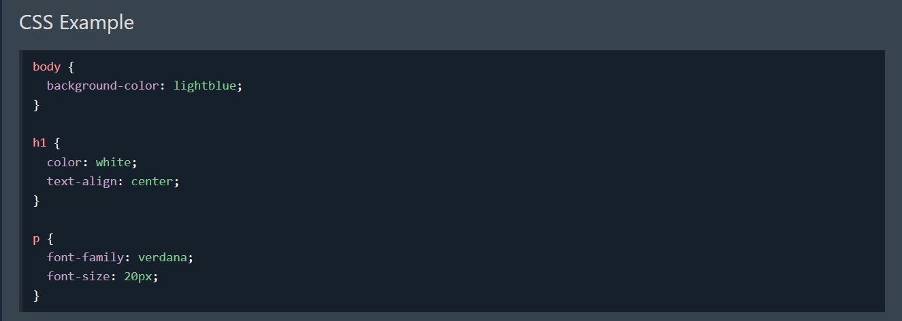
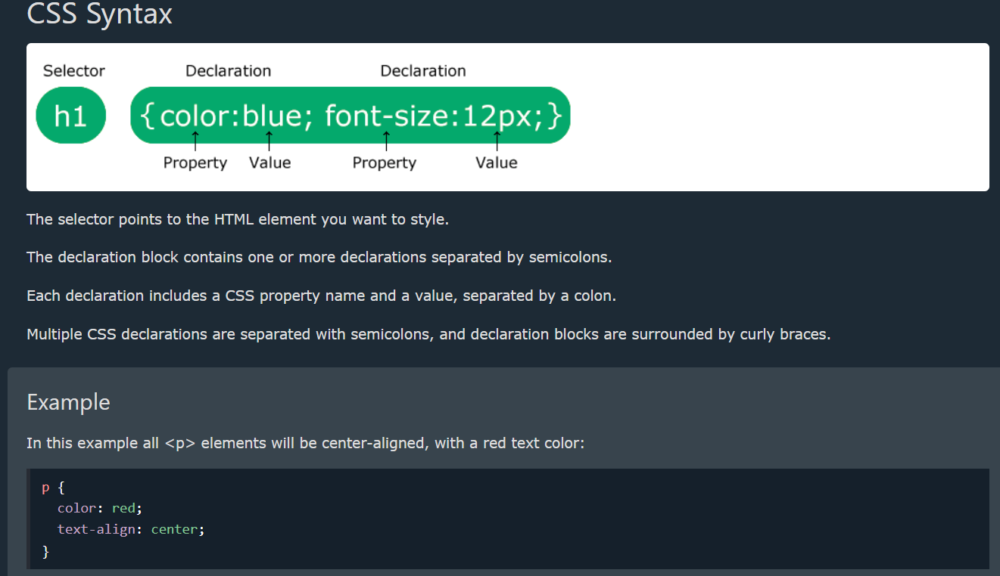
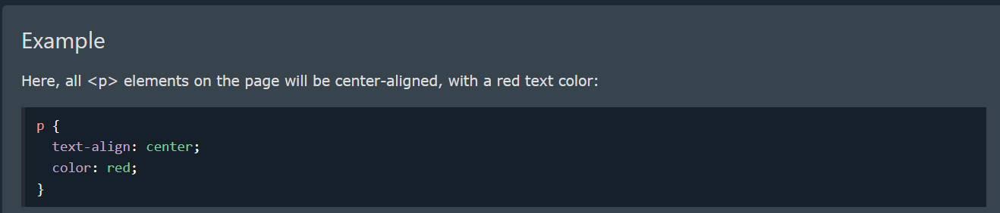
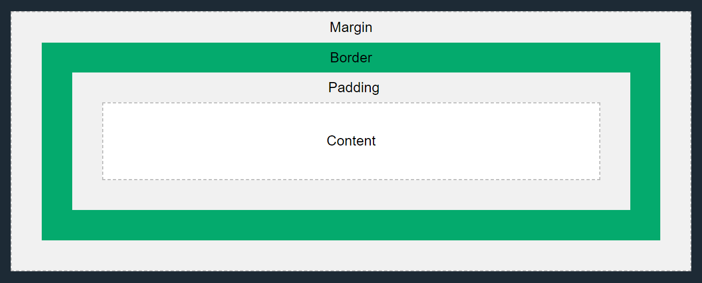
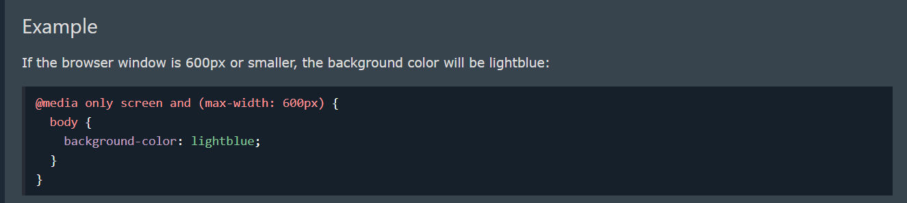

CSS is the language we use to style an HTML document. CSS describes how HTML elements should be displayed. This tutorial will teach you CSS from basic to advanced.
CSS stands for Cascading Style Sheets CSS describes how HTML elements are to be displayed on screen, paper, or in other media CSS saves a lot of work. It can control the layout of multiple web pages all at once External stylesheets are stored in CSS files
We can divide CSS selectors into five categories: Simple selectors (select elements based on name, id, class) Combinator selectors (select elements based on a specific relationship between them) Pseudo-class selectors (select elements based on a certain state) Pseudo-elements selectors (select and style a part of an element) Attribute selectors (select elements based on an attribute or attribute value) This page will explain the most basic CSS selectors.
In CSS, the term "box model" is used when talking about design and layout. The CSS box model is essentially a box that wraps around every HTML element. It consists of: content, padding, borders and margins. The image below illustrates the box model:
What is a Media Query? Media query is a CSS technique introduced in CSS3. It uses the @media rule to include a block of CSS properties only if a certain condition is true.
